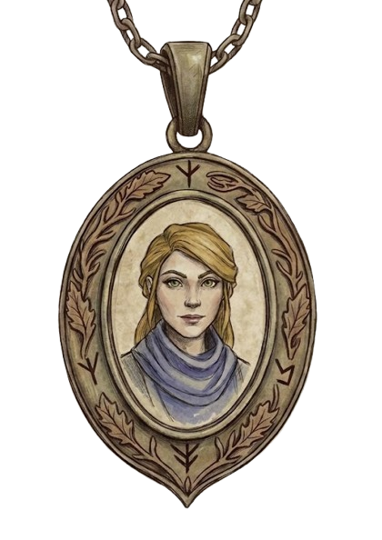
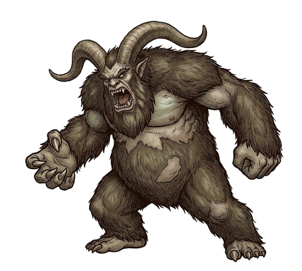
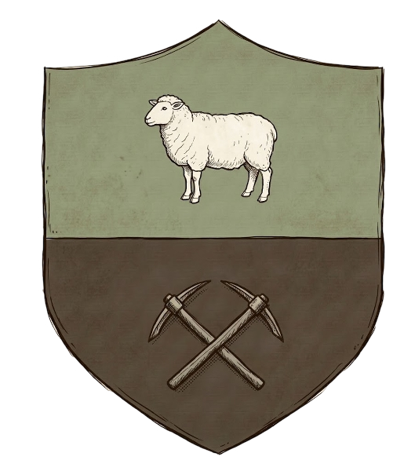

Traverse de Lameblanche
Traverse de Lameblanche
L'épaulement glaciaire se partage entre deux masses : un petit glacier enserré entre le refuge abandonné et le sentier menant à Gol Koval, et un second, plus imposant, qui enveloppe la caverne inexplorée du yéti. La fonte de ce dernier alimente un lac où affleure une petite île portant des ruines drust et trois stèles, dont l'une gît renversée ; les eaux s'en écoulent ensuite en cascade jusqu'aux pâtis d'Ormefange, au sud. Plusieurs cadavres, en majorité masculins, jonchent le secteur, accoutrés à la manière dont on se représente communément les géants qui peuplaient autrefois ces hauteurs : masques, bois de cerf, ossements et fourrures. Les blessures désignent un yéti adulte pour responsable du carnage, la traverse de Lameblanche paraissant constituer son territoire.
La découverte du site fit suite à l'observation d'une silhouette au sommet du glacier de Gol Koval : sans doute un sectaire de Roncécorche fuyant le massacre, ou cherchant une voie de descente avant de tomber, plus tard, sous les coups de la bête. La chronologie demeure incertaine. Les empreintes relevées rattachent toutefois le groupe à la trouée des Hauts-Laments, à l'est, plutôt qu'à Corvenac au sud ; encore que l'on ne saurait exclure que quelques rescapés en eussent effectué la descente.
La découverte du site fit suite à l'observation d'une silhouette au sommet du glacier de Gol Koval : sans doute un sectaire de Roncécorche fuyant le massacre, ou cherchant une voie de descente avant de tomber, plus tard, sous les coups de la bête. La chronologie demeure incertaine. Les empreintes relevées rattachent toutefois le groupe à la trouée des Hauts-Laments, à l'est, plutôt qu'à Corvenac au sud ; encore que l'on ne saurait exclure que quelques rescapés en eussent effectué la descente.
Grotte des cultistes

Un campement abandonné occupe le fond de la grotte. Restes d'un feu, vivres avariées et vêtements civils dont l'appartenance reste indéterminée. Victimes du culte ? Bourreaux ? Voire les deux ? Le pendentif Sandrenon figure parmi ces affaires. Quatre cages au total : deux petites, destinées à des enfants ou des animaux, deux grandes pour des adultes. Sang humain séché à l'intérieur, récent. Outils sacrificiels à proximité. Tout indique que les sectateurs tués par le yéti à l'extérieur occupaient cette caverne et y pratiquaient des rituels.Un monolithe drust entouré d'encens et de grigris le confirme, ainsi que deux ronces en pot, inexplicables à cette altitude et probablement issues de la forêt Cramoisie. L'herbier de Joshua Barnes, chasseur de sorcières au service de Griseroche, y consacre une note : cette variété, selon lui, fléchirait sous la magie drust, ou en porterait intrinsèquement la charge. Un parchemin adjacent, dédié à une certaine "Roncécorche", ressemble à un manuel d'initiation à la magie drust et prolonge la question.
Intérieur du glacier

Le glacier s'ouvre sur une cavité inexplorée, trop périlleuse pour qu'on s'y engage seul, car il apparaît que le yéti adulte y entrepose ses proies. La glace lui tient probablement lieu de chambre-froide pour les préserver ? L'hypothèse, si elle se vérifie, trahirait chez la bête une prévoyance remarquable, bien que cela n'épuise sans doute pas le mystère du lieu.Le glacier de Gol Koval, plus en aval, dissimule des ruines drust en son cœur. Les anciens occupants y cherchaient-ils refuge, ou cherchaient-ils à soustraire quelque chose au regard des hommes ? Cette interrogation explique vraisemblablement la tentative des cultistes de Roncécorche, qui voulurent forcer celui-ci et succombèrent sous les coups du yéti. Lequel dédaigna leurs corps, signe que sa férocité ne relevait pas de la faim, mais bien de la protection de son territoire.
Quelque chose, dans cette cavité, attire donc, peut-être, les adorateurs du roi-sorcier. La sagesse commanderait de laisser dormir ce secret, mais puisqu'il a éveillé des convoitises autant le percer. Qui ne connaît ni son ennemi ni lui-même perdra cent batailles. Reste à découvrir ce qui dort sous la glace en épargnant le yéti, gardien involontaire des intérêts de Drustvar.
Pâtis d'Ormefange

Les Pâtis d'Ormefange forment une petite vallée que les montagnes environnantes protègent des vents dominants. Malgré l'altitude, les saisons y demeurent assez clémentes pour permettre les travaux agricoles, même si l'hiver s'y montre parfois rude. La terre, riche et nourricière, soutient un élevage tourné principalement vers les moutons et les chèvres. L'humidité y règne toutefois sans partage, entretenant boue, sols spongieux, inondations et glissements de terrain.L'unique bourg du secteur, Corvenac, prospère sous la protection de la maison Corven. Une mine de charbon, exploitée à proximité, garantit aux habitants une autonomie appréciable ainsi qu'un confort domestique acceptable.
Trouée des Hauts-Laments
À l'ouest, la Trouée des Hauts-Laments serpente à travers les montagnes et demeure la seule voie terrestre reliant Corvenac au reste de la région. Conjuguée à des reliefs presque infranchissables, cette unique brèche explique à elle seule l'isolement du bourg. Le passage débouche soit sur les contreforts menant à Griseroche, fief ancestral de la maison Forpin, soit sur les côtes occidentales de Drustvar, à proximité de Butte-du-Faucon et donc de la forêt Cramoisie.
Le secteur, sauvage et peu accueillant, vit jadis s'éteindre les derniers drust refoulés par la milice d'Arom Malvoie. La présence de bastions oubliés ou de ruines y demeure vraisemblable.
Le secteur, sauvage et peu accueillant, vit jadis s'éteindre les derniers drust refoulés par la milice d'Arom Malvoie. La présence de bastions oubliés ou de ruines y demeure vraisemblable.
Gol Koval
Aux confins du domaine Tertrebois et de Val-Archer s'étendent des ruines ensevelies sous un glacier, longtemps laissées à l'abandon faute de visiteurs prêts à braver leur réputation. Durant la Quatrième Guerre, d'anciens cairns dressés sur place se réactivèrent, ranimant les morts-vivants drust qui dormaient sous la glace, ainsi que les golems de pierre nés de leur art. Leur destruction rendit le site à son isolement, si l'on excepte les quelques créatures égarées du Fléau déchaîné qui y errent depuis l'an trente-cinq.
Récemment, une reconnaissance conduite en compagnie de la forestière Rheva Grisnoyer et du druide Edward Mornebruine permit d'y distinguer une silhouette au sommet du glacier. L'ascension qui suivit livra des empreintes dont la trace mena jusqu'à la traverse de Lameblanche que présente la carte. Tout porte à croire qu'un sectateur de Roncécorche y cherchait une voie de descente, soit pour rejoindre Gol Koval, soit pour gagner l'est de Drustvar depuis la forêt Cramoisie en contournant la Ferté-d'Arom, et donc l'Ordre des Braises. À moins qu'il ne fuyait le yéti, pour peu que le massacre perpétré par ce dernier eût précédé la rencontre.
Une enquête conduite parallèlement à Gol Koval par l'inquisiteur Blancmistral et la sœur Everlange y dévoila la présence d'un autre groupe d'adorateurs des drust. Reste à déterminer s'il s'agit d'une cellule alliée à celle de Lameblanche, ou des deux ramifications d'une même secte.
Récemment, une reconnaissance conduite en compagnie de la forestière Rheva Grisnoyer et du druide Edward Mornebruine permit d'y distinguer une silhouette au sommet du glacier. L'ascension qui suivit livra des empreintes dont la trace mena jusqu'à la traverse de Lameblanche que présente la carte. Tout porte à croire qu'un sectateur de Roncécorche y cherchait une voie de descente, soit pour rejoindre Gol Koval, soit pour gagner l'est de Drustvar depuis la forêt Cramoisie en contournant la Ferté-d'Arom, et donc l'Ordre des Braises. À moins qu'il ne fuyait le yéti, pour peu que le massacre perpétré par ce dernier eût précédé la rencontre.
Une enquête conduite parallèlement à Gol Koval par l'inquisiteur Blancmistral et la sœur Everlange y dévoila la présence d'un autre groupe d'adorateurs des drust. Reste à déterminer s'il s'agit d'une cellule alliée à celle de Lameblanche, ou des deux ramifications d'une même secte.
Caverne explorée
Des humains campaient en ces lieux avant d'en être chassés ou massacrés, vraisemblablement par les yétis. Un campement de fortune saccagé en constitue le seul vestige, et les maigres affaires qui y demeurent ne permettent ni de le dater ni d'en identifier les propriétaires.
Quelques ossements jalonnent le sol çà et là, non humains et probablement issus de proies ramenées par les créatures qui occupent désormais les lieux. La grotte semble par ailleurs abriter la progéniture du yéti adulte aperçu. Un jeune, à supposer qu'il n'y en ait qu'un seul, se dissimulait derrière un rocher au fond.
Rien ici ne mérite qu'on s'y attarde davantage.
Quelques ossements jalonnent le sol çà et là, non humains et probablement issus de proies ramenées par les créatures qui occupent désormais les lieux. La grotte semble par ailleurs abriter la progéniture du yéti adulte aperçu. Un jeune, à supposer qu'il n'y en ait qu'un seul, se dissimulait derrière un rocher au fond.
Rien ici ne mérite qu'on s'y attarde davantage.
Crevasse bouchée
Une fissure comblée par la glace. Probablement trop étroite pour laisser passer un yéti adulte. Deux corps gisaient à proximité.
Un passage annexe qui creuse le glacier ? Ou bien l'ouverture d'une cavité indépendante ?
Un passage annexe qui creuse le glacier ? Ou bien l'ouverture d'une cavité indépendante ?
Refuge abandonné
Une tour de guet cramponnée à flanc de falaise, surveillant la vallée en contrebas. Ne comprend qu'une seule et unique pièce. La façade exposée au précipice se délabre, laissant le vent s'engouffrer à l'intérieur. Isolation médiocre, mais tolérable. La porte d'entrée, au mécanisme grippé, contraint à se faufiler par-dessous. Quelqu'un de bien bâti parviendrait sans doute à la remettre en place.
Une cheminée centrale, vraisemblablement conçue pour alimenter en huile le fanal perché au sommet, devait permettre de projeter une flamme visible de loin, à la façon d'un phare. Fonction jamais vérifiée à ce jour. Le mobilier se résume à quelques lits et du matériel en très mauvais état.
Une cheminée centrale, vraisemblablement conçue pour alimenter en huile le fanal perché au sommet, devait permettre de projeter une flamme visible de loin, à la façon d'un phare. Fonction jamais vérifiée à ce jour. Le mobilier se résume à quelques lits et du matériel en très mauvais état.
Ambiance